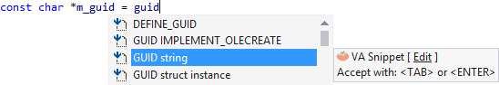
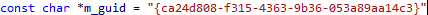
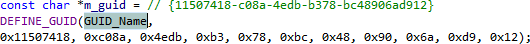
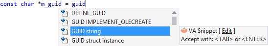
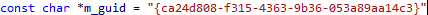
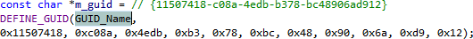

VA Snippets for GUID
Create a GUID with one of several default VA Snippets.

Accept one VA Snippet to create a string version of a GUID.

Accept another to define a GUID using a macro.

Learn more .
Create a GUID with one of several default VA Snippets.

Accept one VA Snippet to create a string version of a GUID.

Accept another to define a GUID using a macro.

Learn more .